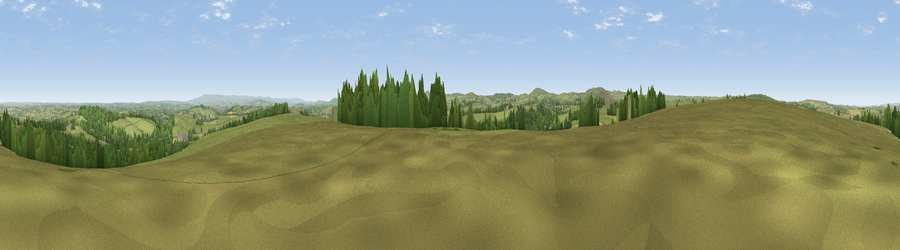

Viewpoint near Laneast
#13988 in England · top 22% of its area beats it · near LaneastWhere it is
The exact computed spot (SX 23575 84875). Click the marker for map links.
The view, rendered

A 360° render of this exact spot computed from the terrain model, tree cover and land cover — summer colours, afternoon light, calibrated against photographs of famous viewpoints. Real trees, hedges and buildings will differ in detail.
The panorama
Grey silhouette: terrain skyline in each direction (720 bearings, Earth curvature and refraction included). Dashed green: skyline with trees (+15 m) and buildings (+8 m) as obstacles. Blue strip: how far the ground is visible on each bearing.
Where the view opens
Wedge length = distance to the farthest visible ground on that bearing (vegetation-aware). Rings at 10, 25 and 50 km.
What fills the view
82% grassland · 12% woodland · 5% cropland ·
Angular shares of the visible panorama (visual magnitude), not map area. Landscape diversity 0.27 (0–1 Shannon).
Key numbers
More beautiful places nearby
The staircase of upgrades: each row has a higher view potential than everything closer. Driving times are estimates from straight-line distance, calibrated against real road routing — check an actual route before setting out.
| Place | Direction | Drive | Score |
|---|---|---|---|
| Viewpoint near Laneast | WNW · 0 km | ~1 min | 59.6 |
| Viewpoint near Tregeare | NE · 3 km | ~6 min | 59.9 |
| Bray Down | WSW · 5 km | ~12 min | 65.7 |
| Viewpoint near Warbstow | NNW · 7 km | ~14 min | 71.2 |
| Brown Willy | SW · 9 km | ~18 min | 77.3 |
| Viewpoint near Lesnewth | WNW · 12 km | ~23 min | 78.1 |
| Tresparrett Down | NW · 13 km | ~24 min | 80.8 |
| Viewpoint near Lesnewth | WNW · 13 km | ~24 min | 82.6 |
50.63680, -4.49628 · source: screening · position refined by local search. Computed location — check access rights before visiting.